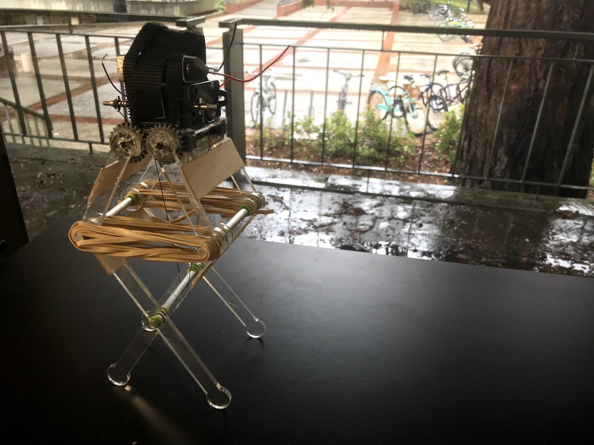

Jumper Engineering Project
The project
Similar to the crawler project, this project had our group of four in ME112: Mechanical Systems Design building a small robot for a demonstration. This bot was based on the fictional Star Wars creatures, mynocks. The final robot was required to jump a meter off the ground before sticking to a platform above with velcro. Below you can watch a video of our robot successfully making the jump. Below, you will also find a technical paper describing our mynock design. In making our mynock and writing a second paper for ME112, I was able to take my learnings from the first paper and apply them here.

The Artifact
To complete this project, our assignment was a final report on the design of our jumping mynock. My team and I ended up with a document we are very proud of. The paper is a technical write up for engineers.
Artifact Reflection
Writing the report for our robot was a good chance to take the feedback from the first report we wrote in ME112, the crawler, and apply it to this project. For example, we learned that our writing should be more concise and that instead of using chronological order to describe how we came to our final design, we should be doing a better job of describing the features we ended up with and why they are effective. With these thoughts in mind, as I went through and wrote sections or edited sections other members of my group had written, I aimed to take out anything unnecessary and ensure that our design was the focus.
Herein lies the biggest distinction I have found when writing from an engineering perspective versus a designer perspective: for engineers, effective communication is less about process. Process is still important in an engineering context, however, the final results and analysis of solutions tend to be more prominent. In contrast, when describing a project to designers, process is typically more emphasized; if one has an excellent approach to the problem, the project is likely to be classified as a success. Switching frames from design classes to engineering classes has helped me understand this communication difference and develop a professional identity that caters to both. As a result, I’ve grown confident in my ability to not only communicate according to specialist or non-specialist audience, but also according to a design centric or engineering centric audience.
This report crystallized learnings from the first paper my group and I authored and development was evident in our improved grade from the first document to the second. My personal growth in choosing content, writing clearly, and editing effectively is also on display.